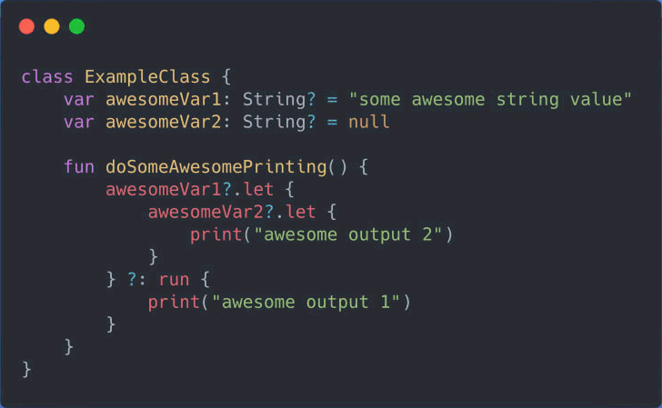

Kotlin — это язык программирования общего назначения, изначально разработанный и представленный компанией JetBrains в 2011 году как Project Kotlin. Первая версия была официально выпущена в 2016 году. Он совместим с Java и поддерживает функциональные языки программирования.
Kotlin широко используется для разработки приложений для Android, веб-приложений, настольных приложений и серверных приложений. Kotlin был создан, чтобы быть лучше, чем Java, и люди, использующие этот язык, в этом убеждены. Большинство приложений Google основаны на Kotlin. Некоторые компании, использующие Kotlin в качестве языка программирования, включают Coursera, Pinterest, PostMates и многие другие.
Разработчики Kotlin зарабатывают в среднем 136 000 долларов в год с возможностью заработать до 171 500 долларов.